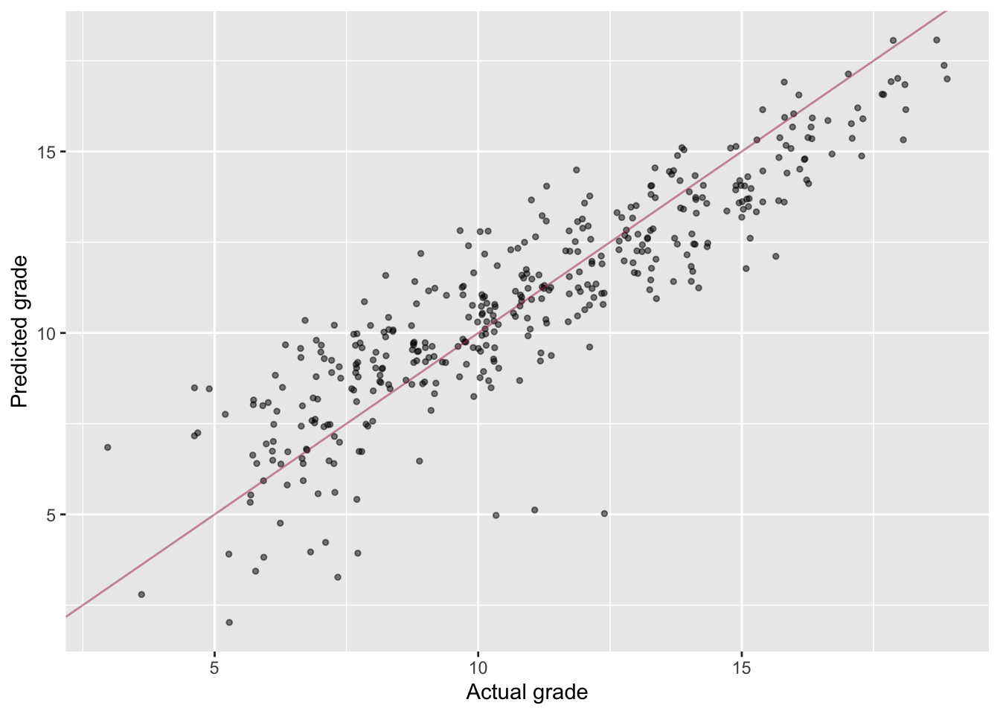
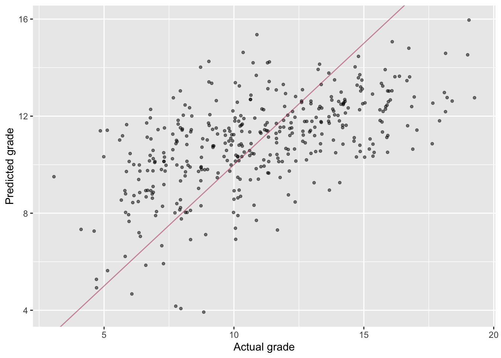

library(tidyverse)
student_math = read_csv2('data/student-mat.csv')## ℹ Using "','" as decimal and "'.'" as grouping mark. Use `read_delim()` for more control.##
## ── Column specification ─────────────────────────────────────────────────────────────────────────────────────────────
## cols(
## .default = col_character(),
## age = col_double(),
## Medu = col_double(),
## Fedu = col_double(),
## traveltime = col_double(),
## studytime = col_double(),
## failures = col_double(),
## famrel = col_double(),
## freetime = col_double(),
## goout = col_double(),
## Dalc = col_double(),
## Walc = col_double(),
## health = col_double(),
## absences = col_double(),
## G1 = col_double(),
## G2 = col_double(),
## G3 = col_double()
## )
## ℹ Use `spec()` for the full column specifications.glimpse(student_math)## Rows: 395
## Columns: 33
## $ school <chr> "GP", "GP", "GP", "GP", "GP", "GP", "GP", "GP", "GP", "GP", "GP", "GP", "GP", "GP", "GP", "GP", …
## $ sex <chr> "F", "F", "F", "F", "F", "M", "M", "F", "M", "M", "F", "F", "M", "M", "M", "F", "F", "F", "M", "…
## $ age <dbl> 18, 17, 15, 15, 16, 16, 16, 17, 15, 15, 15, 15, 15, 15, 15, 16, 16, 16, 17, 16, 15, 15, 16, 16, …
## $ address <chr> "U", "U", "U", "U", "U", "U", "U", "U", "U", "U", "U", "U", "U", "U", "U", "U", "U", "U", "U", "…
## $ famsize <chr> "GT3", "GT3", "LE3", "GT3", "GT3", "LE3", "LE3", "GT3", "LE3", "GT3", "GT3", "GT3", "LE3", "GT3"…
## $ Pstatus <chr> "A", "T", "T", "T", "T", "T", "T", "A", "A", "T", "T", "T", "T", "T", "A", "T", "T", "T", "T", "…
## $ Medu <dbl> 4, 1, 1, 4, 3, 4, 2, 4, 3, 3, 4, 2, 4, 4, 2, 4, 4, 3, 3, 4, 4, 4, 4, 2, 2, 2, 2, 4, 3, 4, 4, 4, …
## $ Fedu <dbl> 4, 1, 1, 2, 3, 3, 2, 4, 2, 4, 4, 1, 4, 3, 2, 4, 4, 3, 2, 3, 3, 4, 2, 2, 4, 2, 2, 2, 4, 4, 4, 4, …
## $ Mjob <chr> "at_home", "at_home", "at_home", "health", "other", "services", "other", "other", "services", "o…
## $ Fjob <chr> "teacher", "other", "other", "services", "other", "other", "other", "teacher", "other", "other",…
## $ reason <chr> "course", "course", "other", "home", "home", "reputation", "home", "home", "home", "home", "repu…
## $ guardian <chr> "mother", "father", "mother", "mother", "father", "mother", "mother", "mother", "mother", "mothe…
## $ traveltime <dbl> 2, 1, 1, 1, 1, 1, 1, 2, 1, 1, 1, 3, 1, 2, 1, 1, 1, 3, 1, 1, 1, 1, 1, 2, 1, 1, 1, 1, 1, 1, 1, 2, …
## $ studytime <dbl> 2, 2, 2, 3, 2, 2, 2, 2, 2, 2, 2, 3, 1, 2, 3, 1, 3, 2, 1, 1, 2, 1, 2, 2, 3, 1, 1, 1, 2, 2, 2, 2, …
## $ failures <dbl> 0, 0, 3, 0, 0, 0, 0, 0, 0, 0, 0, 0, 0, 0, 0, 0, 0, 0, 3, 0, 0, 0, 0, 0, 0, 2, 0, 0, 0, 0, 0, 0, …
## $ schoolsup <chr> "yes", "no", "yes", "no", "no", "no", "no", "yes", "no", "no", "no", "no", "no", "no", "no", "no…
## $ famsup <chr> "no", "yes", "no", "yes", "yes", "yes", "no", "yes", "yes", "yes", "yes", "yes", "yes", "yes", "…
## $ paid <chr> "no", "no", "yes", "yes", "yes", "yes", "no", "no", "yes", "yes", "yes", "no", "yes", "yes", "no…
## $ activities <chr> "no", "no", "no", "yes", "no", "yes", "no", "no", "no", "yes", "no", "yes", "yes", "no", "no", "…
## $ nursery <chr> "yes", "no", "yes", "yes", "yes", "yes", "yes", "yes", "yes", "yes", "yes", "yes", "yes", "yes",…
## $ higher <chr> "yes", "yes", "yes", "yes", "yes", "yes", "yes", "yes", "yes", "yes", "yes", "yes", "yes", "yes"…
## $ internet <chr> "no", "yes", "yes", "yes", "no", "yes", "yes", "no", "yes", "yes", "yes", "yes", "yes", "yes", "…
## $ romantic <chr> "no", "no", "no", "yes", "no", "no", "no", "no", "no", "no", "no", "no", "no", "no", "yes", "no"…
## $ famrel <dbl> 4, 5, 4, 3, 4, 5, 4, 4, 4, 5, 3, 5, 4, 5, 4, 4, 3, 5, 5, 3, 4, 5, 4, 5, 4, 1, 4, 2, 5, 4, 5, 4, …
## $ freetime <dbl> 3, 3, 3, 2, 3, 4, 4, 1, 2, 5, 3, 2, 3, 4, 5, 4, 2, 3, 5, 1, 4, 4, 5, 4, 3, 2, 2, 2, 3, 4, 4, 3, …
## $ goout <dbl> 4, 3, 2, 2, 2, 2, 4, 4, 2, 1, 3, 2, 3, 3, 2, 4, 3, 2, 5, 3, 1, 2, 1, 4, 2, 2, 2, 4, 3, 5, 2, 1, …
## $ Dalc <dbl> 1, 1, 2, 1, 1, 1, 1, 1, 1, 1, 1, 1, 1, 1, 1, 1, 1, 1, 2, 1, 1, 1, 1, 2, 1, 1, 1, 2, 1, 5, 3, 1, …
## $ Walc <dbl> 1, 1, 3, 1, 2, 2, 1, 1, 1, 1, 2, 1, 3, 2, 1, 2, 2, 1, 4, 3, 1, 1, 3, 4, 1, 3, 2, 4, 1, 5, 4, 1, …
## $ health <dbl> 3, 3, 3, 5, 5, 5, 3, 1, 1, 5, 2, 4, 5, 3, 3, 2, 2, 4, 5, 5, 1, 5, 5, 5, 5, 5, 5, 1, 5, 5, 5, 5, …
## $ absences <dbl> 6, 4, 10, 2, 4, 10, 0, 6, 0, 0, 0, 4, 2, 2, 0, 4, 6, 4, 16, 4, 0, 0, 2, 0, 2, 14, 2, 4, 4, 16, 0…
## $ G1 <dbl> 5, 5, 7, 15, 6, 15, 12, 6, 16, 14, 10, 10, 14, 10, 14, 14, 13, 8, 6, 8, 13, 12, 15, 13, 10, 6, 1…
## $ G2 <dbl> 6, 5, 8, 14, 10, 15, 12, 5, 18, 15, 8, 12, 14, 10, 16, 14, 14, 10, 5, 10, 14, 15, 15, 13, 9, 9, …
## $ G3 <dbl> 6, 6, 10, 15, 10, 15, 11, 6, 19, 15, 9, 12, 14, 11, 16, 14, 14, 10, 5, 10, 15, 15, 16, 12, 8, 8,…Task A
student_math dataset, create a regression
object called model_fit_1 predicting third period grade
(G3) based on sex, age, internet, and failures. How do you interpret the
regression output? Which variables are significantly related to third
period grade?model_fit_1 = lm(G3 ~ sex + age + internet + failures, data = student_math)
summary(model_fit_1)##
## Call:
## lm(formula = G3 ~ sex + age + internet + failures, data = student_math)
##
## Residuals:
## Min 1Q Median 3Q Max
## -12.2156 -1.9523 0.0965 3.0252 9.4370
##
## Coefficients:
## Estimate Std. Error t value Pr(>|t|)
## (Intercept) 13.9962 2.9808 4.695 3.69e-06 ***
## sexM 1.0451 0.4282 2.441 0.0151 *
## age -0.2407 0.1735 -1.388 0.1660
## internetyes 0.7855 0.5761 1.364 0.1735
## failures -2.1260 0.2966 -7.167 3.86e-12 ***
## ---
## Signif. codes: 0 '***' 0.001 '**' 0.01 '*' 0.05 '.' 0.1 ' ' 1
##
## Residual standard error: 4.237 on 390 degrees of freedom
## Multiple R-squared: 0.1533, Adjusted R-squared: 0.1446
## F-statistic: 17.65 on 4 and 390 DF, p-value: 2.488e-13# Sex and failures predict third period grade.
# Men perform better than women (b = 1.04, p = 0.015),
# and the more failures a person has the lower their grade (b = -2.13, p<.01).library(lsr)
library(lmtest)
student_math = mutate(student_math,
sex_binary = case_when(sex == 'F' ~ 0,
sex == 'M' ~ 1),
internet_binary = case_when(internet == 'yes' ~ 1,
internet == 'no' ~ 0))
correlate(as.data.frame(select(student_math, sex_binary, age, internet_binary, failures)), test=TRUE)##
## CORRELATIONS
## ============
## - correlation type: pearson
## - correlations shown only when both variables are numeric
##
## sex_binary age internet_binary failures
## sex_binary . -0.029 0.044 0.044
## age -0.029 . -0.112 0.244***
## internet_binary 0.044 -0.112 . -0.063
## failures 0.044 0.244*** -0.063 .
##
## ---
## Signif. codes: . = p < .1, * = p<.05, ** = p<.01, *** = p<.001
##
##
## p-VALUES
## ========
## - total number of tests run: 6
## - correction for multiple testing: holm
##
## sex_binary age internet_binary failures
## sex_binary . 1.000 1.000 1.000
## age 1.000 . 0.129 0.000
## internet_binary 1.000 0.129 . 0.833
## failures 1.000 0.000 0.833 .
##
##
## SAMPLE SIZES
## ============
##
## sex_binary age internet_binary failures
## sex_binary 395 395 395 395
## age 395 395 395 395
## internet_binary 395 395 395 395
## failures 395 395 395 395res_stu = rstudent(model = model_fit_1)
pred = model_fit_1$fitted.values
model_checks = data.frame(pred = pred, res_stu = res_stu)
model_checks = as_tibble(model_checks)
ggplot(data = model_checks, mapping = aes(x = res_stu)) +
geom_histogram(aes(y=..density..), binwidth=.1, colour="darkgrey", fill="white") +
labs(x = 'Studentized residuals', y='Density') +
geom_density(alpha=.2, fill="red", colour="darkgrey") +
geom_vline(aes(xintercept=mean(res_stu)), color="red", linetype="dashed", size=.5)ggplot(model_checks, mapping = aes(sample = res_stu)) +
stat_qq() +
stat_qq_line()ggplot(data = model_checks, mapping = aes(x = pred, y = res_stu)) +
geom_point(alpha = 0.6, size= 2) +
geom_hline(yintercept=0)shapiro.test(model_checks$res_stu)##
## Shapiro-Wilk normality test
##
## data: model_checks$res_stu
## W = 0.96112, p-value = 1.007e-08bptest(model_fit_1)##
## studentized Breusch-Pagan test
##
## data: model_fit_1
## BP = 6.9372, df = 4, p-value = 0.1392# It looks like age and failure are actually correlated.
# This could affect interpretation of the corresponding coefficients.
# It also looks like the residuals are not normally distriburted.student-por.csv in R as
student_port. Inspect the dataset first.student_por = read_csv2('data/student-por.csv')## ℹ Using "','" as decimal and "'.'" as grouping mark. Use `read_delim()` for more control.##
## ── Column specification ─────────────────────────────────────────────────────────────────────────────────────────────
## cols(
## .default = col_character(),
## age = col_double(),
## Medu = col_double(),
## Fedu = col_double(),
## traveltime = col_double(),
## studytime = col_double(),
## failures = col_double(),
## famrel = col_double(),
## freetime = col_double(),
## goout = col_double(),
## Dalc = col_double(),
## Walc = col_double(),
## health = col_double(),
## absences = col_double(),
## G1 = col_double(),
## G2 = col_double(),
## G3 = col_double()
## )
## ℹ Use `spec()` for the full column specifications.glimpse(student_por)## Rows: 649
## Columns: 33
## $ school <chr> "GP", "GP", "GP", "GP", "GP", "GP", "GP", "GP", "GP", "GP", "GP", "GP", "GP", "GP", "GP", "GP", …
## $ sex <chr> "F", "F", "F", "F", "F", "M", "M", "F", "M", "M", "F", "F", "M", "M", "M", "F", "F", "F", "M", "…
## $ age <dbl> 18, 17, 15, 15, 16, 16, 16, 17, 15, 15, 15, 15, 15, 15, 15, 16, 16, 16, 17, 16, 15, 15, 16, 16, …
## $ address <chr> "U", "U", "U", "U", "U", "U", "U", "U", "U", "U", "U", "U", "U", "U", "U", "U", "U", "U", "U", "…
## $ famsize <chr> "GT3", "GT3", "LE3", "GT3", "GT3", "LE3", "LE3", "GT3", "LE3", "GT3", "GT3", "GT3", "LE3", "GT3"…
## $ Pstatus <chr> "A", "T", "T", "T", "T", "T", "T", "A", "A", "T", "T", "T", "T", "T", "A", "T", "T", "T", "T", "…
## $ Medu <dbl> 4, 1, 1, 4, 3, 4, 2, 4, 3, 3, 4, 2, 4, 4, 2, 4, 4, 3, 3, 4, 4, 4, 4, 2, 2, 2, 2, 4, 3, 4, 4, 4, …
## $ Fedu <dbl> 4, 1, 1, 2, 3, 3, 2, 4, 2, 4, 4, 1, 4, 3, 2, 4, 4, 3, 2, 3, 3, 4, 2, 2, 4, 2, 2, 2, 4, 4, 4, 4, …
## $ Mjob <chr> "at_home", "at_home", "at_home", "health", "other", "services", "other", "other", "services", "o…
## $ Fjob <chr> "teacher", "other", "other", "services", "other", "other", "other", "teacher", "other", "other",…
## $ reason <chr> "course", "course", "other", "home", "home", "reputation", "home", "home", "home", "home", "repu…
## $ guardian <chr> "mother", "father", "mother", "mother", "father", "mother", "mother", "mother", "mother", "mothe…
## $ traveltime <dbl> 2, 1, 1, 1, 1, 1, 1, 2, 1, 1, 1, 3, 1, 2, 1, 1, 1, 3, 1, 1, 1, 1, 1, 2, 1, 1, 1, 1, 1, 1, 1, 2, …
## $ studytime <dbl> 2, 2, 2, 3, 2, 2, 2, 2, 2, 2, 2, 3, 1, 2, 3, 1, 3, 2, 1, 1, 2, 1, 2, 2, 3, 1, 1, 1, 2, 2, 2, 2, …
## $ failures <dbl> 0, 0, 0, 0, 0, 0, 0, 0, 0, 0, 0, 0, 0, 0, 0, 0, 0, 0, 3, 0, 0, 0, 0, 0, 0, 0, 0, 0, 0, 0, 0, 0, …
## $ schoolsup <chr> "yes", "no", "yes", "no", "no", "no", "no", "yes", "no", "no", "no", "no", "no", "no", "no", "no…
## $ famsup <chr> "no", "yes", "no", "yes", "yes", "yes", "no", "yes", "yes", "yes", "yes", "yes", "yes", "yes", "…
## $ paid <chr> "no", "no", "no", "no", "no", "no", "no", "no", "no", "no", "no", "no", "no", "no", "no", "no", …
## $ activities <chr> "no", "no", "no", "yes", "no", "yes", "no", "no", "no", "yes", "no", "yes", "yes", "no", "no", "…
## $ nursery <chr> "yes", "no", "yes", "yes", "yes", "yes", "yes", "yes", "yes", "yes", "yes", "yes", "yes", "yes",…
## $ higher <chr> "yes", "yes", "yes", "yes", "yes", "yes", "yes", "yes", "yes", "yes", "yes", "yes", "yes", "yes"…
## $ internet <chr> "no", "yes", "yes", "yes", "no", "yes", "yes", "no", "yes", "yes", "yes", "yes", "yes", "yes", "…
## $ romantic <chr> "no", "no", "no", "yes", "no", "no", "no", "no", "no", "no", "no", "no", "no", "no", "yes", "no"…
## $ famrel <dbl> 4, 5, 4, 3, 4, 5, 4, 4, 4, 5, 3, 5, 4, 5, 4, 4, 3, 5, 5, 3, 4, 5, 4, 5, 4, 1, 4, 2, 5, 4, 5, 4, …
## $ freetime <dbl> 3, 3, 3, 2, 3, 4, 4, 1, 2, 5, 3, 2, 3, 4, 5, 4, 2, 3, 5, 1, 4, 4, 5, 4, 3, 2, 2, 2, 3, 4, 4, 3, …
## $ goout <dbl> 4, 3, 2, 2, 2, 2, 4, 4, 2, 1, 3, 2, 3, 3, 2, 4, 3, 2, 5, 3, 1, 2, 1, 4, 2, 2, 2, 4, 3, 5, 2, 1, …
## $ Dalc <dbl> 1, 1, 2, 1, 1, 1, 1, 1, 1, 1, 1, 1, 1, 1, 1, 1, 1, 1, 2, 1, 1, 1, 1, 2, 1, 1, 1, 2, 1, 5, 3, 1, …
## $ Walc <dbl> 1, 1, 3, 1, 2, 2, 1, 1, 1, 1, 2, 1, 3, 2, 1, 2, 2, 1, 4, 3, 1, 1, 3, 4, 1, 3, 2, 4, 1, 5, 4, 1, …
## $ health <dbl> 3, 3, 3, 5, 5, 5, 3, 1, 1, 5, 2, 4, 5, 3, 3, 2, 2, 4, 5, 5, 1, 5, 5, 5, 5, 5, 5, 1, 5, 5, 5, 5, …
## $ absences <dbl> 4, 2, 6, 0, 0, 6, 0, 2, 0, 0, 2, 0, 0, 0, 0, 6, 10, 2, 2, 6, 0, 0, 0, 2, 2, 6, 8, 0, 2, 4, 0, 2,…
## $ G1 <dbl> 0, 9, 12, 14, 11, 12, 13, 10, 15, 12, 14, 10, 12, 12, 14, 17, 13, 13, 8, 12, 12, 11, 12, 10, 10,…
## $ G2 <dbl> 11, 11, 13, 14, 13, 12, 12, 13, 16, 12, 14, 12, 13, 12, 14, 17, 13, 14, 8, 12, 13, 12, 13, 10, 1…
## $ G3 <dbl> 11, 11, 12, 14, 13, 13, 13, 13, 17, 13, 14, 13, 12, 13, 15, 17, 14, 14, 7, 12, 14, 12, 14, 10, 1…model_fit_2 using
the same variables as question 1: however, this time use the portugese
dataset.model_fit_2 = lm(G3 ~ sex + age + internet + failures, data = student_por)
summary(model_fit_2)##
## Call:
## lm(formula = G3 ~ sex + age + internet + failures, data = student_por)
##
## Residuals:
## Min 1Q Median 3Q Max
## -12.8941 -1.8345 0.0522 1.8807 7.8041
##
## Coefficients:
## Estimate Std. Error t value Pr(>|t|)
## (Intercept) 11.61020 1.68101 6.907 1.19e-11 ***
## sexM -0.71515 0.23625 -3.027 0.002568 **
## age 0.01986 0.10031 0.198 0.843134
## internetyes 0.92639 0.27508 3.368 0.000803 ***
## failures -2.04819 0.20738 -9.877 < 2e-16 ***
## ---
## Signif. codes: 0 '***' 0.001 '**' 0.01 '*' 0.05 '.' 0.1 ' ' 1
##
## Residual standard error: 2.936 on 644 degrees of freedom
## Multiple R-squared: 0.1794, Adjusted R-squared: 0.1743
## F-statistic: 35.19 on 4 and 644 DF, p-value: < 2.2e-16model_fit_2) and the math dataset
(model_fit_1)?In the portugese datset, men do worse than women (b = -0.72, p < .01), and internet actually helps performance (b = 0.93, p < .01). Failures still lower grades (b = -2.05, p < .01).
Task B
student_math dataset, create a regression
object called model_fit_3 predicting first period grade
(G1) based on guardian. Guardian is a nominal variable with 3
levels.model_fit_3 = lm(G1 ~ guardian, data = student_math)summary to look at the output. You should see 2
predictors listed (“guardianmother” and “guardiananother”), rather than
the expected 1 (“guardian”). lm has dummy coded your
variables with “father” set as the reference group. Look at the levels
of the guardian factor to see why “father” is the reference group. How
would you interpret the results?summary(model_fit_3)##
## Call:
## lm(formula = G1 ~ guardian, data = student_math)
##
## Residuals:
## Min 1Q Median 3Q Max
## -7.8828 -2.8828 -0.1111 2.1172 8.1172
##
## Coefficients:
## Estimate Std. Error t value Pr(>|t|)
## (Intercept) 11.1111 0.3505 31.705 <2e-16 ***
## guardianmother -0.2283 0.4041 -0.565 0.572
## guardianother -0.5486 0.6843 -0.802 0.423
## ---
## Signif. codes: 0 '***' 0.001 '**' 0.01 '*' 0.05 '.' 0.1 ' ' 1
##
## Residual standard error: 3.325 on 392 degrees of freedom
## Multiple R-squared: 0.001775, Adjusted R-squared: -0.003318
## F-statistic: 0.3486 on 2 and 392 DF, p-value: 0.7059We can use our three estimates to calculate these predictions. Father is a reference group/coded as 0, so the predicted grade is the intercept estimate (11.11). For the other two groups we just need to add their estimate to the intercept, therefore our predicted grade for those with a mother is 10.88 and for those with other it is 10.56.
summarize(group_by(student_math, guardian),
mean_G1 = mean(G1))## # A tibble: 3 x 2
## guardian mean_G1
## <chr> <dbl>
## 1 father 11.1
## 2 mother 10.9
## 3 other 10.6Task C
student_math dataset, create a regression
object called model_fit_4 predicting a student’s first
period grade (G1) based on all variables in the dataset (Hint:
use the notation formula = y ~ . to include all
variables)model_fit_4 = lm(G1 ~ ., data = student_math)model_fit_4 object as a
vector called model_4_fitted.model_4_fitted = model_fit_4$fitted.values
student_math$predicted_values = model_4_fittedstudent_math dataset, create a scatterplot
showing the relationship between a student’s first period grade (G1) and
the fitted values from the model. Does the model appear to correctly fit
a student’s first period grade? Use geom_abline() with
slope=1 and intercept=0 to plot the identity
line and better answer to this question.ggplot(data = student_math, aes(x = G1, y = predicted_values)) +
geom_jitter(alpha=.5, size=1) +
geom_abline(slope=1, intercept=0, color='maroon', alpha=.5) +
labs(x='Actual grade', y='Predicted grade')
# Yes it seems to work well.
# This is probably because we are including both G2 and G3 as predictors.model_fit_5
which doesn’t include G2 or G3 as predictors, but still includes all
other variables. Save the fitted values from the
model_fit_5 object as a vector called
model_5_fitted.model_fit_5 = lm(G1 ~ ., data = select(student_math, -predicted_values, -G2, -G3))
model_5_fitted = model_fit_5$fitted.values
student_math$predicted_values = model_5_fitted
summary(model_fit_5)##
## Call:
## lm(formula = G1 ~ ., data = select(student_math, -predicted_values,
## -G2, -G3))
##
## Residuals:
## Min 1Q Median 3Q Max
## -6.5043 -1.9410 -0.0326 1.7997 7.1376
##
## Coefficients: (2 not defined because of singularities)
## Estimate Std. Error t value Pr(>|t|)
## (Intercept) 11.375064 3.113004 3.654 0.000297 ***
## schoolMS 0.009965 0.549925 0.018 0.985553
## sexM 0.894290 0.347385 2.574 0.010448 *
## age -0.070082 0.150905 -0.464 0.642639
## addressU 0.150710 0.405805 0.371 0.710571
## famsizeLE3 0.429175 0.339195 1.265 0.206602
## PstatusT 0.154297 0.502913 0.307 0.759170
## Medu 0.117943 0.224515 0.525 0.599688
## Fedu 0.143774 0.192870 0.745 0.456496
## Mjobhealth 0.926137 0.776837 1.192 0.233983
## Mjobother -0.782287 0.495455 -1.579 0.115244
## Mjobservices 0.466532 0.554282 0.842 0.400529
## Mjobteacher -0.922790 0.721274 -1.279 0.201596
## Fjobhealth -0.553377 0.998994 -0.554 0.579973
## Fjobother -1.134849 0.710736 -1.597 0.111217
## Fjobservices -0.994008 0.734310 -1.354 0.176705
## Fjobteacher 1.187017 0.900744 1.318 0.188414
## reasonhome 0.165602 0.384744 0.430 0.667150
## reasonother -0.181207 0.567991 -0.319 0.749891
## reasonreputation 0.444004 0.400557 1.108 0.268411
## guardianmother 0.050219 0.379042 0.132 0.894673
## guardianother 0.866380 0.694357 1.248 0.212947
## traveltime -0.025119 0.235489 -0.107 0.915112
## studytime 0.604725 0.199842 3.026 0.002659 **
## failures -1.314183 0.231280 -5.682 2.77e-08 ***
## schoolsupyes -2.155394 0.463335 -4.652 4.65e-06 ***
## famsupyes -0.978681 0.332560 -2.943 0.003466 **
## paidyes -0.102389 0.331906 -0.308 0.757892
## activitiesyes -0.052728 0.309114 -0.171 0.864652
## nurseryyes 0.029587 0.381623 0.078 0.938245
## higheryes 1.140610 0.748777 1.523 0.128575
## internetyes 0.255412 0.430423 0.593 0.553293
## romanticyes -0.211223 0.326001 -0.648 0.517455
## famrel 0.025733 0.170852 0.151 0.880363
## freetime 0.254817 0.164896 1.545 0.123161
## goout -0.413594 0.155971 -2.652 0.008367 **
## Dalc -0.063146 0.229869 -0.275 0.783703
## Walc -0.025339 0.172300 -0.147 0.883164
## health -0.167531 0.111859 -1.498 0.135102
## absences 0.012277 0.020124 0.610 0.542204
## sex_binary NA NA NA NA
## internet_binary NA NA NA NA
## ---
## Signif. codes: 0 '***' 0.001 '**' 0.01 '*' 0.05 '.' 0.1 ' ' 1
##
## Residual standard error: 2.854 on 355 degrees of freedom
## Multiple R-squared: 0.3339, Adjusted R-squared: 0.2607
## F-statistic: 4.562 on 39 and 355 DF, p-value: 3.633e-15model_fit_5, as in question 3. How well does the new
model perform now?ggplot(data = student_math, aes(x = G1, y = predicted_values)) +
geom_jitter(alpha=.5, size=1) +
geom_abline(slope=1, intercept=0, color='maroon', alpha=.5) +
labs(x='Actual grade', y='Predicted grade')
# It's performing a lot worse (Actually still explains like 30% of the variability so not that bad)Task D
For each question, conduct the appropriate ANOVA. Write the conclusion in APA style. To summarize an effect in an ANOVA, use the format F(XXX, YYY) = FFF, p = PPP, where XXX is the degrees of freedom of the variable you are testing, YYY is the degrees of freedom of the residuals, FFF is the F value for the variable you are testing, and PPP is the p-value. If the p-value is less than .01, just write p < .01.
For the purposes of this class, if the p-value of the ANOVA is less than .05, conduct post-hoc tests. If you are only testing one independent variable, write APA conclusions for the post-hoc test. If you are testing more than one independent variable in your ANOVA, you do not need to write APA style conclusions for post-hoc tests – just comment the result.
student_math dataset, was there a main effect
of the school support on G1? Conduct a one-way ANOVA. If the result is
significant (p < .05), conduct post-hoc tests.aov_1 = aov(formula = G1 ~ schoolsup,
data = student_math)
summary(aov_1)## Df Sum Sq Mean Sq F value Pr(>F)
## schoolsup 1 196 196.21 18.61 2.04e-05 ***
## Residuals 393 4145 10.55
## ---
## Signif. codes: 0 '***' 0.001 '**' 0.01 '*' 0.05 '.' 0.1 ' ' 1TukeyHSD(aov_1)## Tukey multiple comparisons of means
## 95% family-wise confidence level
##
## Fit: aov(formula = G1 ~ schoolsup, data = student_math)
##
## $schoolsup
## diff lwr upr p adj
## yes-no -2.101801 -3.059794 -1.143808 2.04e-05There was a significant main effect of school support on the first period grade (F(1, 393) = 18.61, p < .01). Pairwise Tukey HSD tests showed significant differences between presence and absence of support (diff = -2.10, p < .01), with students with school support having on average a better grade.
student_math dataset, was there a main effect
of the family support on G1? Conduct a one-way ANOVA. If the result is
significant (p < .05), conduct post-hoc tests.aov_2 = aov(formula = G1 ~ famsup,
data = student_math)
summary(aov_2)## Df Sum Sq Mean Sq F value Pr(>F)
## famsup 1 31 31.04 2.831 0.0933 .
## Residuals 393 4310 10.97
## ---
## Signif. codes: 0 '***' 0.001 '**' 0.01 '*' 0.05 '.' 0.1 ' ' 1There was no significant main effect of family support on the first period grade (F(1, 393) = 2.83, p = .09).
aov_3 = aov(formula = G1 ~ schoolsup*famsup,
data = student_math)
summary(aov_3)## Df Sum Sq Mean Sq F value Pr(>F)
## schoolsup 1 196 196.21 18.595 2.05e-05 ***
## famsup 1 17 17.04 1.615 0.205
## schoolsup:famsup 1 2 1.69 0.160 0.689
## Residuals 391 4126 10.55
## ---
## Signif. codes: 0 '***' 0.001 '**' 0.01 '*' 0.05 '.' 0.1 ' ' 1No, we would come to the same conclusions.